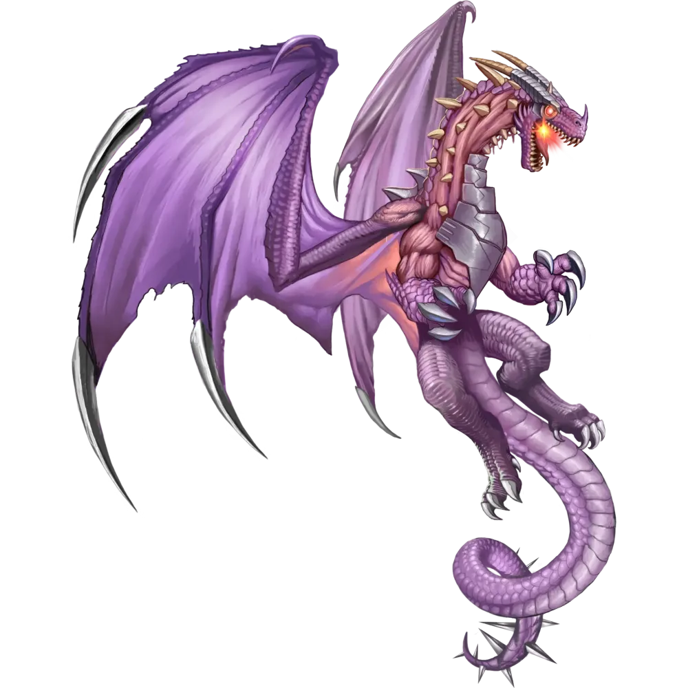
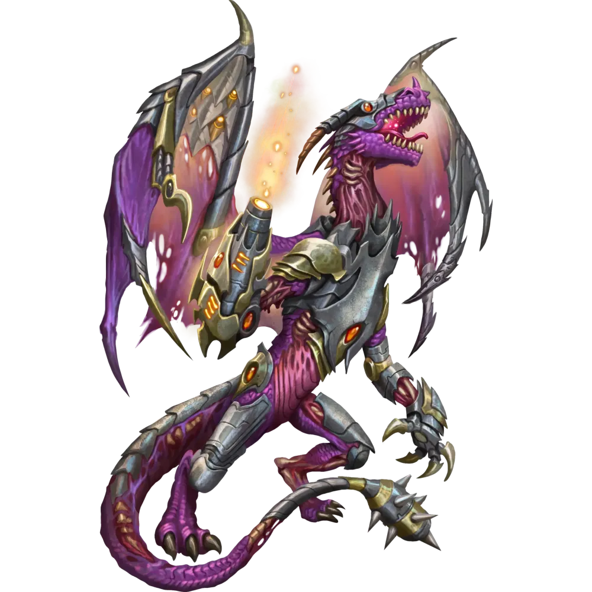

各年龄段数据卡
斯凯拉赞克为了不断寻找更新奇、更怪异的科技部件来替换自己的躯体部位，斯凯拉赞克率领着一小群宣誓效忠她大业的高智能亡灵游历凡间。斯凯拉赞克的爪牙利用魔法伪装混迹于生者之间，暗中搜集传闻、开展调查，为这头义体龙物色下一个猎取目标。一旦斯凯拉赞克锁定了合适的物品或材料，通常会不顾一切地猛攻目标地点，直至将其夺取到手，随后整合进自己不断演化的躯体之中。 义体龙的一生堪称一部充满对立与矛盾的写照。浸透躯体的虚空能量令它们的血肉无可避免地持续腐烂崩解，一步步将它们推向死亡边缘。然而，义体龙偏偏选择抗拒这一宿命。它们爆发出无比顽强的求生执念，不断发掘新颖巧妙的方法来改造强化自身――用金属与魔法义体替换腐朽脱落的鳞片和碎裂风化的骨骼，在求生挣扎中不断壮大力量。比起几乎任何其他巨龙，义体龙都更加站在科技革新的最前沿，同时又依然维系着自身与虚空能量神秘伟力的深层联结。 无心插柳的革新者一头义体龙越是年长，就意味着它顶着自身绝症存活下来的岁月越久；而能在重重并发症中成功支撑如此漫长的时光，其才智也必然愈发惊世骇俗。在漫长的求生旅途中，义体龙往往已制造出数百乃至数千件器械、精巧装置与改造义体。这些发明或许并未全部直接延续巨龙的性命，但也无疑各自发挥了作用。耐人寻味的是，有时那些被义体龙自己判定为失败品的无心插柳之作，最终反而会成为这头巨龙流传最久的不朽遗产或成名绝技，彻底革新某一特定科学技术领域。 典型义体龙的巢穴同样呈现出这种鲜明的二元反差：在同一间石室里，一面墙壁可能摆满了形形色色的颅骨、残骸与其他死灵秘术器物，旁边却立着一张铺满尖端科技工具与精密机械图纸的宽大工作台。守护义体龙巢穴的陷阱通常会将剥皮蚀骨的黯蚀法术、致命跃动的能量电弧，与飞旋切割的刀刃机关融为一体，由此打造出魔法与机械交织的恐怖复合陷阱，令单精于其中任一领域的闯入者倍感棘手。义体龙的宝库也和它们的陷阱一样光怪陆离，往往既收藏着记载死灵仪式的古老典籍，又囤积着大块未经锻打的天外陨铁。许多义体龙热衷于收集发条器械与火药兵器，尝试将其整合进自己的躯体；而每一座义体龙巢穴中，都会专门辟出一片区域供主人安装并测试自己的改造部件。 黑火药科技义体龙常常将武器直接安装到自己身上，有时干脆用刀刃或重锤替换掉枯朽萎缩的肢体。另一些义体龙则会将远程武器架设在肩部或头顶，并将弹药储存在体内暗舱之中。大多数义体龙对黑火药科技并不陌生，常将其用于自身的挂载武装。当这些巨龙向从未见过火器的凡人聚落倾泻手枪与火枪弹雨时，受害者脸上惊慌失措而又困惑茫然的神情总能让它们陶醉不已。 由于同死亡力量的紧密纠缠，加之需要避开旁人窥探的私密空间来拿自身躯体做实验，义体龙大多性情孤僻、独来独往。尽管一头义体龙偶尔也会与另一头同族短暂分享改造技艺与结构图纸，但双方几乎总会不可避免地为了锻造这些救命义体所需的珍稀资源而大打出手――毕竟一方多占一分，另一方就少得一分，更何况它们共享的发明往往需要完全相同的材料来制造、维护与改良。不过，也有些义体龙会唤起成群结队的无心智亡灵来听候差遣。骷髅与僵尸似乎是大多数义体龙唯一能够长期容忍的伴侣：它们绝不会顶嘴，不需要耗费多少资源与维护精力，而且通常严格服从命令行事。至于这些亡灵大军动辄对当地居民掀起血腥屠戮的不幸倾向，则属于大多数义体龙不得不忍受的意外副作用――或者说“程序缺陷”，因为这往往会招来超出义体龙预期的负面关注。不过对于某些最为睚眦必报的义体龙而言，这种肆虐杀戮反倒更像是一项正合心意的“预期功能”。 拆解义体遗骸击败义体龙的勇者不仅能在其宝库中寻获大量贵金属与高价值科技造物，就连巨龙遗骸本身也是一座宝藏。只要费些功夫，意志坚定的拾荒者便能拆下它的替换义肢、回收其挂载武装。然而，义体龙的血肉却几乎毫无用处，通常在死后便会急速腐烂崩解。事实上，翻检义体龙尸骸的人极有可能被这些腐肉传染上可怕的恶疾；因此最稳妥的做法往往是等它死后过上几天再动手……前提是你能把其他食腐者和拾荒者拦在外面那么久！ 义体龙可能会选择在科技水平远超周边邻邦的聚落附近建立巢穴，但在这种情况下，迫于现实需求，巨龙与当地居民的关系几乎总是充满敌意。义体龙固然也可以选择谈判或以物易物，但更常见的情形则是它每隔一段时间便暴力洗劫聚落，将一切能找到的必需设备与资源席卷一空。又或者，具备变形能力的义体龙也会潜入城市内部，暗中窥探当地工程师与铁匠的技艺，寻找能够进一步改造自身躯体的新方法。 分崩离析义体龙大多才智超群，但有时单凭智慧并不足以阻止不可逆转的腐朽令它们的躯体彻底分崩离析。一旦走到那一步，它们空无一人的巢穴便会化作自身的陵墓――对于那些甘冒死灵与科技双重陷阱风险的无畏盗墓者而言，这无疑是一座名副其实的宝库。运气最好的话，只要抢先一步抵达，就能兵不血刃地搬空巨龙财宝；可若是时运不济，他们或许就会发现那头义体龙已经作为亡灵再度苏醒。 惊鸿一瞥间只看到它们披覆金属的腐烂身躯之人，有时会将义体龙误认作构装体或亡灵。尽管它们确实兼具这两类生物的部分特征，但有志屠龙的勇者在面对义体龙时，绝不该完全照搬对付构装体或亡灵的惯用伎俩。正能量固然能够伤害义体龙，但依旧死死萦绕于其灵魂之上的生命丝缕，使它们远不像寻常亡灵那样容易被生命能量击垮；义体龙身上的金属部件也确实会被电流麻痹或被高温灼烤，一如钢铁构装体或黄铜发条造物所受的影响，但义体龙聪明得很，绝不会放过那些专门针对自身弱点下手的敌人。任何准备迎战义体龙的人，都必须做好应对一切突发状况的准备。 巧爪戴德瑞克萨隆无论属于哪一种传承，能够活到成为太古龙的巨龙都寥寥无几。典型巨龙的一生充斥着无休止的血腥暴力――既源于它们自己挑起的袭击与阴谋，也来自各路屠龙者的讨伐。然而，一头强大、狡诈而谨慎的巨龙固然能够击溃外敌，却难以战胜体内的死敌。 鉴于义体龙的肉身早已背叛了自己，在体内奔涌不息的狂暴虚空能量侵蚀下不断坏死崩解，义体龙顺理成章地成为了全世界太古龙数量最稀少的巨龙传承之一。或许还有少数其他龙类也能争夺这一头衔，但倘若按太古龙与孵化幼龙总数的比例来计算，义体龙恐怕无可匹敌。 正因如此，那些真正活到晋升为太古龙的义体龙，无一不是整个世界上最绝顶聪明、技艺精湛且危险莫测的存在。 被世人普遍尊称为“巧爪”的著名太古义体龙戴德瑞克萨隆，正是这一铁律的最佳典范。戴德瑞克萨隆打破了世人的一切刻板印象：与其他义体龙相比，他在研究中更加严谨有条理，也更少诉诸暴力。这并不意味着他的手段有丝毫心慈手软，但他精明地避免展现出残酷无情或烧杀抢掠的姿态，以免逼得各方势力联手对抗共同威胁。相反，他以鲜有其他义体龙能及的手腕开展交易、谈判与贸易。他派遣自己的合作者代他出席各地的学术研讨会，向该领域的其他专家汲取学识，甚至公开展示他的部分研究成果以换取同行切磋；他通过信使或魔法与横跨三座大陆的最杰出头脑保持书信往来。他在谈判桌上从不轻易或草率拍板，但一旦许下诺言，就必定信守到底――不仅分毫不差地履行契约条文，甚至还会额外多做几分，确保交易对方心满意足。无论是圣徒还是罪人，只要有利可图，他来者不拒；不过，倘若有人妄图赖掉他应得的报酬，他也会不惜一切代价将其彻底摧毁――只要条件允许，他更倾向于假借代理人之手，或是直接利用对方本土文化的法律体系令其身败名裂。 身死执念犹存考虑到义体龙体内奔涌着何等海量的黯蚀能量，许多义体龙在死后转化为亡灵想必毫不令人意外……而且有时还是极其强大而凶险的亡灵。那些拒绝向义体龙提供救命零件的人，日后很可能会发现自己沦为了某头幽灵龙、吸血鬼龙乃至龙巫妖偏执复仇的猎物！ 正是得益于这套处世方略，世人不仅愿意、甚至渴望与“巧爪”做生意。他那些印有标志性金属龙爪徽记的革新造物畅销世界各地的市场；而他又将销售所得的丰厚资金与书信往来换取的前沿情报投入研发，使自己的发明成就远远超越了单打独斗所能企及的极限。与其他苦苦挣扎的义体龙相比，这一切让他得以从容不迫地延续生命，并维持着相对极佳的健康状态。他不仅成功活到了太古龙之境，甚至从未有过任何已知的濒死险情――这在义体龙之中可谓凤毛麟角。义体龙很少对外提起，但它们绝大多数都经历过惊心动魄的濒死时刻，全靠在最后关头勉强完成某项实验才侥幸从鬼门关前捡回性命。戴德瑞克萨隆的传奇地位常常在其他义体龙心中激起嫉妒、敬畏与惊叹，因为想要复制他的成功绝非易事。或许正是过人天赋、圆融手腕再加上一点点好运的完美结合，才造就了这头最负盛名的义体龙的辉煌成就。 虚空科技部分义体龙会打造所谓的“虚空科技”――这是一类魔法与科技深度融合的混合造物，旨在将弥漫于义体龙全身的虚空能量转化为动力源，从而反向保护其躯体免受虚空坏死的恐怖侵蚀。不言而喻，虚空科技对绝大多数其他生物根本无法运转；而像亡灵这类同样依靠虚空能量驱动的存在一旦使用它，自身力量反而会遭到抽汲削弱。 亡者饷银：斯凯拉赞克的死灵骨干 Wages of the Dead: Skyrazanq's Cadre我对目前搜集到的义体龙资料仍不满足，因此决定冒一次险：我主动设法联络义体龙斯凯拉赞克，提议以知识交换知识。我当然一清二楚她四处劫掠的凶名，也知道她向来不怎么热衷于讨价还价或和平谈判。 尽管如此，我还是坚持发出了邀约，因为我觉得这份回报值得冒这个险。起初，我的示好遭到了审视与戒备。这也在情理之中――像斯凯拉赞克这样恶名昭彰的巨龙自然不会轻信表面言辞，只会怀疑这是她在无休止袭击中结下的众多仇家设下的圈套、诱饵或陷阱。为此，她先派出麾下一名亡灵副官前来摸清我的虚实。我自然早有防备，预料到了可能到来的侦察乃至偷袭；但我万万没有料到的是，被我当场抓获、正试图暗中窥探我居所的那位幽灵龙访客，竟展现出了出人意料的温文尔雅与迷人风度。 或许我不该对此感到大惊小怪，但事实证明，她麾下的亡灵骨干并非全都一门心思渴望杀伐冲突――又或者说，这份亲和力恰恰就是我这位交谈对象能够胜任出色密探的本钱之一？总而言之，我无需与斯凯拉赞克直接对话，便顺利从这位副官口中搜集到了关键情报，也得以免去当面会晤的风险，直接奉上我许诺的知识报酬。在同她的副官深谈一番之后，我隐约觉得，倘若真是斯凯拉赞克本尊亲自到场，事情恐怕绝不会进展得如此顺遂。 ――永光贤者卡利赞德雷克斯 |
 义体龙  义体龙 |